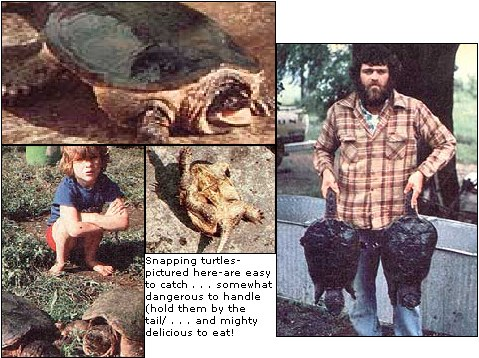

A delectable dinner may be as close as the nearest pond or stream!
One of my earliest little-girl memories is of going with my dad and brothers to catch snapping turtles in the muddy Auglaize River near Wapakoneta, Ohio. The rugged, hook-jawed beasts-once pulled ashore and cleaned-would be cooked into a big pot of turtle soup or fried to a golden brown in a sizzling hot skillet.
This abundant-and practically free-source of delicious protein can be found in almost any body of fresh water in eastern North America. And though snappers look mean, they're a cinch to catch and- if you know what you're doing-easy to handle.
Foraging for the wild meat can be a profitable business, too! One of my nephews sells uncleaned snappers for over 50 cents a pound, and a single catch can net him an average of $7.50. Then there are folks (such as Noble Isley of Disko, Indiana), who make their living as turtle hunters and wholesalers. Isley sells dressed meat for $2.50 a pound, and he regularly supplies the product to large turtle fries . . . which are becoming very popular at Legion halls, union gatherings, and friendly neighborhood hangouts in the Midwest.
Like its relatives, this tastiest of turtles (which bears the Latin name, Chelydra serpentina ) does have four legs, a head, and a tail sticking out from under a shell . . . but it's pretty easy to distinguish snappers from their less feisty kin: Imagine a street fighter at a ladies' tea party, and you have about the right amount of contrast.
A snapper's shell is a dull (often mossy and algae-covered) piece of armor without any bright spots or markings, and neither the turtle's head nor its tail can ever completely retract into the protective carapace. The reptile's front legs are unusually quick and flexible, and a snapper can flip from its back to a traveling position in no time at all. Its yellow feet are tipped by claws as sharp as its eyes, and its jaws-supported by a thick, weightlifter's neck- can amputate a finger easily . . . so be warned!
The snapper's Achilles' heel, however, is its tail! Grab it . . . hold the creature well away from your body . . . and you'll render this reptilian cousin of "Jaws" almost as harmless as a bucket of water.
Most snapping turtles have top shells that are about a foot long and 8 to 10 inches wide. The snappers we hook usually weigh between 10 and 20 pounds . . . but 35-pounders are not unheard of, and very old turtles (zoologists guess the maximum age to be between 80 and 100 years) may tip the scales at 50 to 60 pounds. (A cousin of the common snapping turtle, the "Alligator Snapper", is found in the lower Mississippi and its bayous. These big fellows may weigh as much as 140 pounds, and I don't recommend that any but the most experienced turtle hunters tangle with them.)
Snappers hibernate all winter, so you won't see the formidable beasts during the cold months. Come spring, though, they can be found in swamps, wetlands, muddy areas of streams or lakes, and even in drainage ditches. They often wait in muskrat holes for prey, and will scour creek bottoms for tasty morsels. The carnivorous scavengers live on insects, fish, birds (including ducklings), and any carrion found in their environment. And, even though turtles breathe air, they must swallow their food underwater. (Therefore, if you become affectionately attached to a snapping turtle, make sure your pet's new home has sufficient water to allow the reptile to submerge.)
I guess the methods of catching snappers are as different as are the people who employ them. The previously mentioned Isley family tell me that they just boat slowly over a lake, trailing a stringerful of fish. A partner-swimming in scuba gear-follows, and when he sees his prey going for the fish, he quietly swims up behind the snapper and flips it into the boat. The Isleys claim they catch hundreds of pounds of turtles in this way.
A second, more ordinary technique is simply to use turtle traps. These wooden frames covered with chicken wire are usually rectangular in shape and measure about 2' X 2' X 4'. One-way openings at both ends allow the turtle to enter the snare and eat the bait, but not to exit. (A hinged lid on the top of the trap gives the hunter easy access to the catch.)
The turtle trap must be lowered under the water . . . fastened by its rope to a convenient tree or stake . . . and left until a snapper is caught (or until small fish or crayfish eat all the bait). Traps are handy for folks whose property borders a stream, but they can be less than pleasant to deal with if you have to load the contraptions into your pickup and cart them all over the countryside.
Probably the easiest and most inexpensive "turtle tricker" is a plain old hook and line. Such a rig can be rolled up to fit in your pocket, and should cost less than a dollar. It can be used in almost any depth of water, and-if put in the right spot-it's almost guaranteed to bring home some meat for the stewpot.
A turtle hook looks like a large fishhook, and is generally at least one-half inch from the barb across to the shank. The line should be an extremely stout cord (most fishing line won't be strong enough, and could easily cut your fingers if used to pull in a heavy turtle). Make sure the hook is securely fastened to the free end of the line . . . and to keep your cord untangled, wrap it around a stick or an empty tin can.
An even simpler rig is a two-foot length of 3/16" nylon cord tied to a discarded plastic jug at one end and to a short steel leader with a heavy hook attached at the other. Just float it-baited-in any likely looking spot overnight. (You can secure the jug to a tree on the bank, but a turtle will usually come in close to shore when it finds itself hooked, so such an anchor isn't really necessary.)
Bloody chunks of beef, such as neck bones or oxtails, are about the best snapper bait. Cut them into pieces approximately 1-1/2 inches long, and secure the meat firmly on the hook. (If you just gently "drape" the bait over your barb, you'll be surprised later at the hook's singular cleanliness . . . and turtlelessness !)
Friends of ours prefer to lure the turtles with dead fish, and they keep small "headson" perch in the freezer for this purpose. (Others-folks who supplement their incomes by trapping fur-bearing animals-like to use muskrat meat.)
Since turtles are night feeders, it's best to wait until evening to set your line. The prime spots are the muddy and slow areas in a river . . . places along a bank where some obstruction (such as a fallen tree) enters the water . . . or most anywhere in a creek with lots of sloping banks and potholes. If you scan the water carefully, you may see a turtle head or two poking up, and you'll know you're near success.
Check your hook early the following morning if you've snared a turtle, pull it out of the water carefully, keeping the critter a good distance from your body . . . then grab its tail and put it in your bucket or basket. (Be aware that turtles are much more aggressive on land than in the water!)
Before you take your snapper home, sprinkle or cover it with water. Remember, too, that turtles can't tolerate long periods in the hot sun, so keep your catch in a cool, shady spot . . . preferably in a covered container, such as a garbage can. As long as it's sitting in a few inches of water, the reptile will be fine for several days . . . but if you plan to keep a snapper for a week or more, you should feed it to be sure it stays alive.
Cleaning a snapping turtle-if you don't know how to do it-can be almost as difficult as peeling an armored tank. If you follow my procedures, however, you'll find it to be a fairly simple task . . . one that can be accomplished in less than half an hour.
The first step is to cut off the snapper's head. If the hook is still in its mouth, you can put a foot on the shell and use the line to pull the head as far out as possible. Otherwise, gently tickle its mouth with a stick, and-when the turtle snaps at this prod-quickly grasp the outstretched neck with a pair of pliers . . . give the turtle a sharp rap on the nose with a piece of hardwood to anesthetize it . . . and cut through the thick (and often surprisingly long) neck with a sharp knife. (Again, methods vary. My neighbor uses a chopping block and an axe.) Bear in mind, though, that reflex action keeps a turtle's jaws and claws active long after they've been severed . . . so put any such cutoff members out of reach of children and family pets.
Now you can tie a stout cord to the tail and hang the turtle from a tree limb or clothesline to drain the blood from the carcass. This will take 10-15 minutes, though some folks prefer to let turtles hang overnight. (Actually, this step may be omitted altogether, but it makes the rest of the cleaning chore less bloody.)
Next, put the headless, bloodless carcass on its back, and-with a sharp knife-cut between the shells and lift off the bottom one. Remove the entrails from the top shell. Next, skin the legs, neck, and tail . . . then cut these from the body and put them in a pan of cold water. Finally, you'll see two nice pieces of meat attached to the inside of the top shell. Break off the few small bones covering these chunks, and remove them also. (Snapper shells , once they're cleaned and dried, make unusual dishes or baskets. I used one this past fall in a flower show, and the result was spectacular!)
Turtles are reputed to have seven different types of meat, though I must admit I've never been able to discern the various flavors . . . other than noting that-like chicken-some of the flesh is light and the rest dark. I do know some delightful ways to prepare this foraged delicacy, however.
The following two recipes have been enjoyed in my family for years . . . and I can guarantee that they'll add a little "wild" variety to your normal dining fare.
To make a hearty turtle soup, boil your skinned turtle sections until the meat can be removed easily from the bones. (This step will take about an hour in a pressure cooker.)
At that point, pick off the meat, discard the bones, and save the broth. Now-in a 10-quart kettle-combine the meat and broth with 1/2 of a small cabbage head, 1 cup of corn, 1 cup of peas, 1 cup of green or navy beans, 3 carrots, 3 stalks of celery, 6 potatoes, the juice from 1 lemon, 1 diced onion, and 1 quart of tomatoes (or tomato juice).
When the vegetables have been simmered until they're tender, stir in 3 tablespoons of browned flour, 1 cup of uncooked noodles, 2 diced hard-boiled eggs, and salt and pepper to taste . . . and cook the dish for another 10 minutes.
Then put 1 teaspoon of pickling spice (it's on the herb shelf in most grocery stores) in a small muslin bag. Tie the cloth tightly, drop it into the soup, let the pot simmer for five minutes more, then remove the bag promptly.
At this point, the soup is done and can be served at once. Some folks, however, prefer to let the treat slow-cook for 12 to 24 hours. Whatever your preference, be sure to freeze any leftovers for a quick meal after a busy day.
Fried turtle is another favorite around our house. Small snappers, between 5 and 10 pounds, are best for this purpose. Bigger turtles can also be cooked in a skillet, but will "chew" much better if they're finished-until tender-in an oven.
To make this dish, soak the skinned neck, legs, and tail in cold water in the refrigerator overnight. Drain the meat and pat it dry, then roll the pieces in flour and set them aside while you heat 3/4 cup of shortening in a large skillet.
Add the turtle to the pan when the shortening has melted, and sprinkle it with salt and pepper. Brown the pieces on each side for about 10 minutes . . . cover the pan with a lid . . . and continue cooking until the portions are tender. (It should take around 45 minutes.)
If you're going to finish your fried snapper in the oven, set the temperature control at 350°F. First brown the turtle . . . then put it in a roasting pan, cover it, place it in the oven, and check the "finger-lickin" meal in about an hour.
If your turtle hunting brings in more snappers than your family can consume, remember that a marketplace does exist for the wild meat.
Hucksters used to peddle snappers from wagons, especially during the 30's. Today, many butcher shops and gourmet meat companies-and even independent groceries-will handle them . . . some outlets are actually looking for suppliers. (Keep in mind that cleaning the turtle first will probably more than double your profit . . . and be sure to check into any laws that might control or prohibit the sale of wild meat before you start selling.)
So get out and forage up a few turtles. Whether you turn them into a tasty soup. a pan-fried treat, or some easy profits. I think you'll agree that snappers are a quarry worth catching!
|
 |
|
|